4. Uso del Sistema¶
Esta sección describe cómo interactúan los usuarios con la plataforma Code_Craft, desde el inicio de sesión hasta la gestión completa del sistema.
Inicio de Sesión¶
Los usuarios deben autenticarse ingresando sus credenciales en la pantalla principal.
{kind=link}
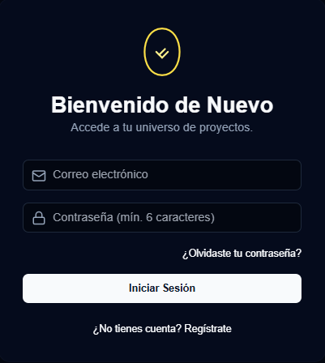
Ingrese su correo y contraseña.
Si los datos son correctos, será redirigido al panel principal.
En caso de error, el sistema mostrará un mensaje de validación.
Registro de Usuario¶
Si el usuario no posee una cuenta, puede registrarse desde la opción ¿No tienes cuenta? Registrarse” en la pantalla de inicio.
{kind=link}
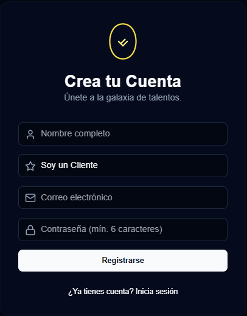
Pasos para registrarse:
Hacer clic en “¿No tienes cuenta? Registrarse”.
Completar el formulario con los datos requeridos (nombre, rol, correo y contraseña).
Presionar “Registrarse” para finalizar el proceso.
Despues te llegara un correo de confirmacion
{kind=link}
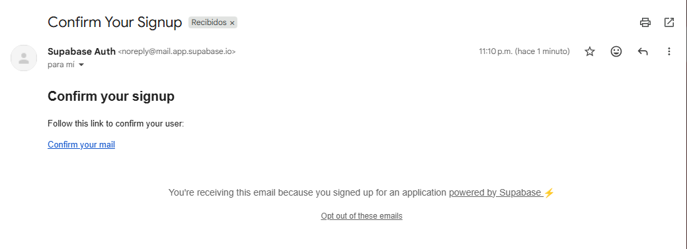
Restablecer contraseña¶
Si el usuario olvida su contraseña, puede recuperarla fácilmente desde la opción “¿Olvidaste tu contraseña?” disponible en la pantalla de inicio de sesión.

Pasos para restablecer la contraseña:
Hacer clic en “¿Olvidaste tu contraseña?”.
Ingresar el correo electrónico registrado.
El sistema enviará un enlace de recuperación al correo proporcionado.
Seguir el enlace y establecer una nueva contraseña segura.
{kind=link}
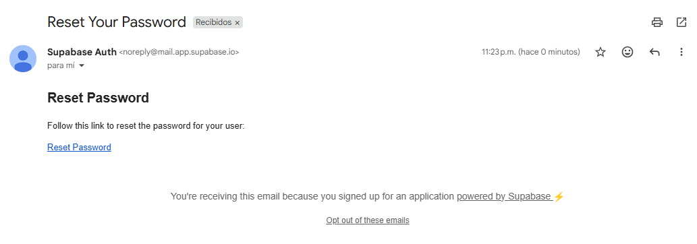
Panel Cliente¶
Tras iniciar sesión, el Cliente accede al dashboard, donde puede visualizar sus proyectos, desarrolladores, pagar proyectos, calendario, plantillas, carrito de compras, un icono de luna o sol de tema visual, perfil y salir.
{kind=link}
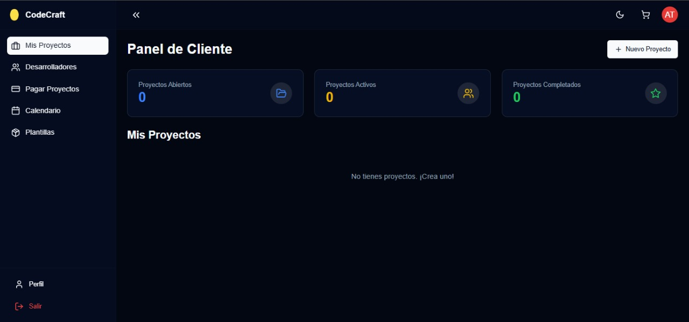
Nuevo proyecto: El cliente puede solicitar un proyecto
{kind=link}
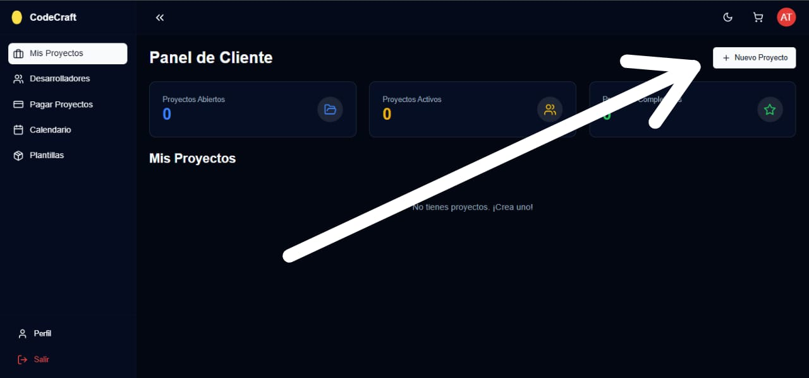
1. Solicitud de proyecto: Quién lo hace: El cliente (o usuario).
Contenido: El formulario de «Solicitud de Proyecto» que usted mostró (incluye Nombre, Descripción, Requisitos Técnicos, Funcionalidades, Diseño, Alcance, Presupuesto y Prioridad).
Propósito: Proporciona al desarrollador toda la información necesaria para comprender qué se quiere y cuánto se espera invertir y en qué plazo.
{kind=link}
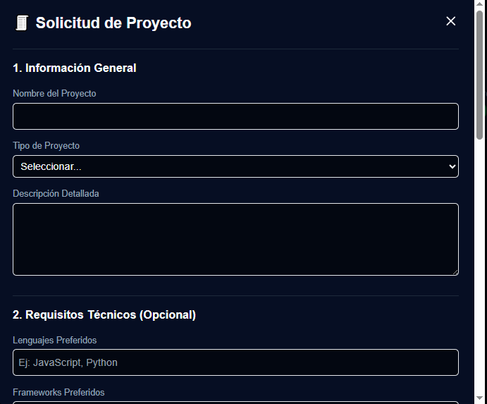
{kind=link}
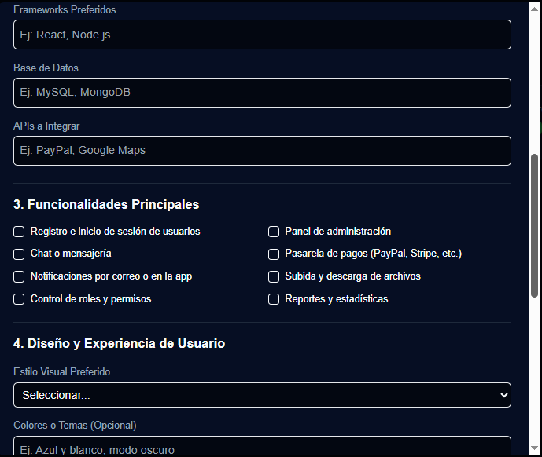
{kind=link}
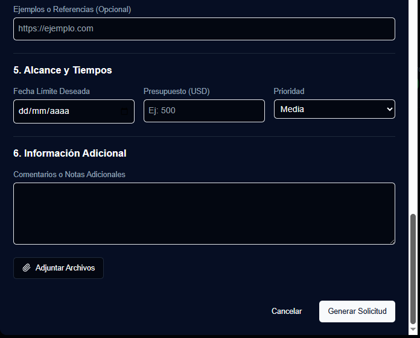
2. Análisis por el Desarrollador:
Quién lo hace: El desarrollador, la agencia o el equipo de ventas/proyectos.
Acción: Analizan los requisitos técnicos (Frameworks, APIs, Base de Datos), las funcionalidades deseadas, el presupuesto y el plazo.
Objetivo: Determinar la viabilidad del proyecto con el presupuesto y tiempo dados, identificar riesgos y empezar a delinear la arquitectura de la solución.
3. La Propuesta de Valor: (La Respuesta) Quién lo hace: El desarrollador.
Contenido: Este es el documento clave que usted menciona. Es la respuesta formal que le ofrece al cliente una solución. Una propuesta de valor completa típicamente incluye:
Comprensión del Problema: Demostrar que el desarrollador entendió las necesidades del cliente.
Solución Propuesta: Un resumen de la solución técnica (ej. «Construiremos una aplicación web con React y Node.js, usando MongoDB, con un panel de administración»).
Alcance Detallado: Lista clara de qué se incluye (entregables) y, crucialmente, qué no se incluye (para evitar malentendidos futuros).
Cronograma y Hitos: Una estimación más detallada del tiempo necesario para cada fase (ej. Análisis, Diseño, Desarrollo, Pruebas).
Presupuesto Detallado: El costo final o una cotización dividida por fases. (A menudo, el desarrollador ofrece diferentes opciones de alcance/precio).
El Valor Diferencial: Por qué el desarrollador es la mejor opción para ese proyecto (experiencia, enfoque, calidad, etc.).
4. El Acuerdo: Quién lo hace: El cliente y el desarrollador.
Acción: Negociación y aceptación de la «Propuesta de Valor».
Resultado: Si ambas partes están de acuerdo con el alcance, el presupuesto y los plazos, se firma un contrato y el proyecto pasa a la fase de ejecución (elaboración).
Desarrollador
Estado de Disponibilidad del Desarrollador Esta opción indica la capacidad actual del desarrollador o del equipo para iniciar un nuevo proyecto o gestionar su propuesta de valor.
{kind=link}
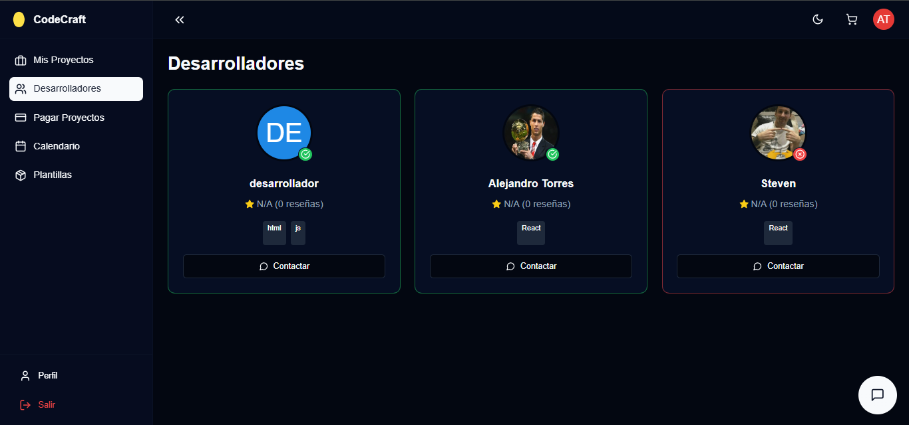
Desarrollador Disponible: El desarrollador tiene capacidad libre para analizar su formulario de solicitud, redactar una Propuesta de Valor detallada y, de llegar a un acuerdo, comenzar la elaboración del proyecto en el corto plazo.
Desarrollador No Disponible: El desarrollador se encuentra actualmente enfocado en la elaboración de proyectos existentes y tiene una capacidad limitada o nula para recibir o analizar nuevas propuestas en este momento.
Pagar proyecto
Condición de Pago: Entrega Final del Proyecto Este apartado establece que el pago final (o el porcentaje restante) del proyecto se hará efectivo únicamente tras la finalización y entrega oficial del producto o servicio desarrollado.
{kind=link}
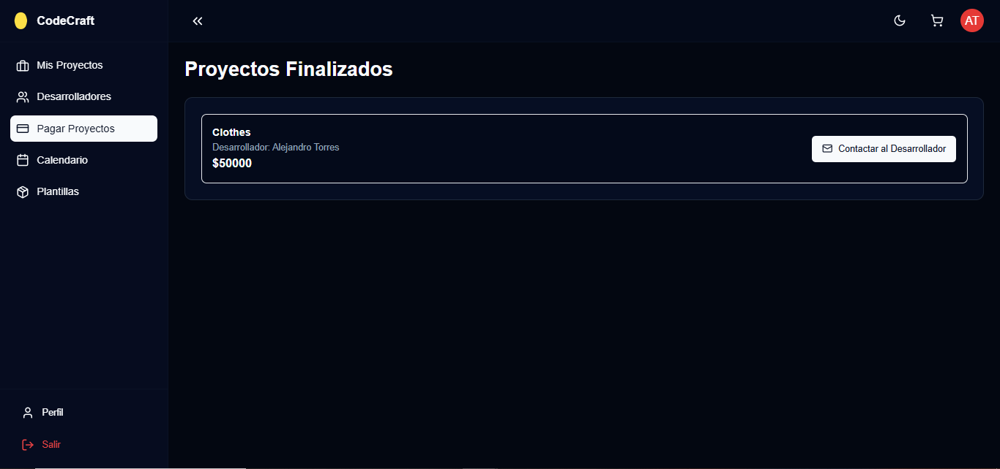
Entrega Final: Se considera finalizada la elaboración del proyecto cuando el desarrollador haya cumplido con todos los puntos y funcionalidades detalladas en el Alcance de la Propuesta de Valor previamente acordada.
Verificación: El desarrollador entregará al cliente todos los activos (código fuente, documentación, accesos) y el proyecto funcional. El cliente tendrá un periodo de revisión y aceptación para confirmar que el trabajo satisface los requisitos.
Desembolso: Una vez que el cliente confirme la correcta entrega y funcionamiento del proyecto según lo pactado, se procederá al pago final acordado, cerrando así la fase de elaboración.
Calendario
El momento en que el proyecto se «inicia» en el calendario es la fecha que se pacta en la Propuesta de Valor y se formaliza en el Acuerdo.
{kind=link}
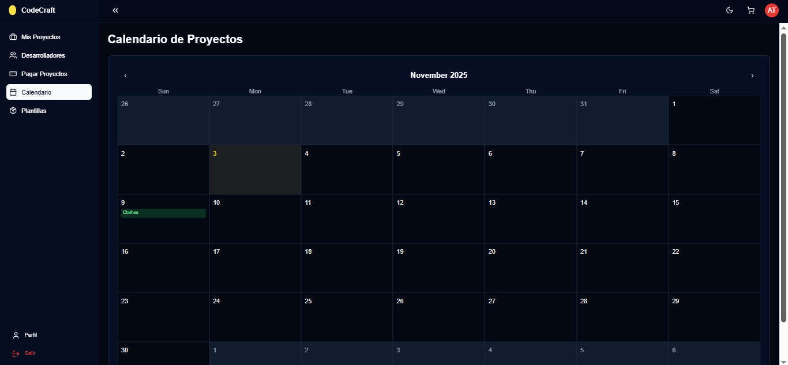
Plantillas
Plantilla de Referencia: Propuesta de Valor de Proyecto Esta plantilla sirve como una guía estructurada y un ejemplo de alto nivel que el desarrollador puede utilizar para elaborar su propuesta de valor específica, tras recibir el formulario de solicitud del cliente
{kind=link}
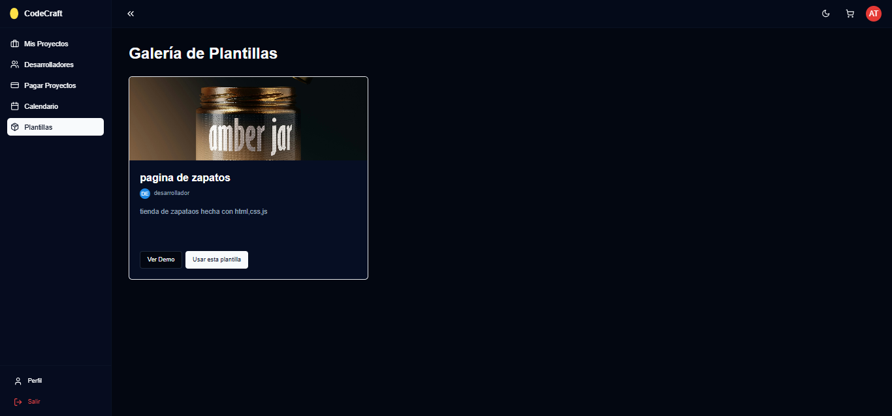
Propósito de la Plantilla:
Referencia para Elaborar Nuevas Propuestas: El desarrollador usará esta estructura como base, modificando el contenido para reflejar las particularidades de cada proyecto. Ayuda a asegurar que no se omita información crítica.
Visualización de la Elaboración: Permite al cliente (y al equipo interno) ver cómo está elaborada la propuesta que finalmente recibirá. El documento muestra los pasos lógicos que el desarrollador sigue para transformar una necesidad (el formulario) en un plan de trabajo concreto.
Panel Desarrollador¶
Tras iniciar sesión, el Desarrollador accede al dashboard, donde puede visualizar sus proyectos enviados, activos, completados, Reseñas, calendario, plantillas, un icono de luna o sol de tema visual, perfil y salir.
{kind=link}
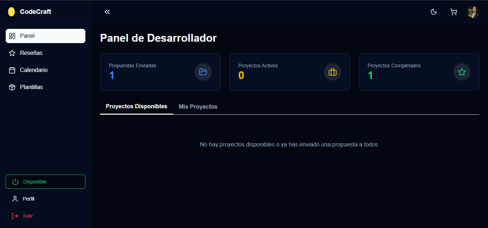
Proyectos enviados, activos y completados
1. Proyectos Enviados (Pendientes de Propuesta) Representa: Las solicitudes de proyecto que el cliente ha enviado (a través del formulario) y que están pendientes de análisis por parte del desarrollador.
Estado en el Flujo: Es la etapa inicial donde el desarrollador debe analizar la viabilidad y elaborar la Propuesta de Valor.
Acciones Clave: El desarrollador debe revisar la descripción, el alcance y el presupuesto para decidir si acepta elaborar la propuesta o si la rechaza por inviabilidad.
Objetivo: Reducir esta lista lo más rápido posible, transformando los envíos en propuestas activas o rechazándolos si no cumplen con los criterios.
2. Proyectos Activos (En Elaboración) Representa: Los proyectos donde se ha llegado a un Acuerdo Formal (contrato firmado y/o primer pago/anticipo recibido) y la elaboración ya ha comenzado según el cronograma acordado.
Estado en el Flujo: La etapa de desarrollo, diseño, programación y pruebas. Corresponde al tiempo que el proyecto ocupa en el calendario.
Acciones Clave: Seguimiento de los hitos del proyecto, gestión de tareas, comunicación constante con el cliente y reuniones de progreso.
Objetivo: Llevar estos proyectos a su finalización, cumpliendo con el Alcance Detallado y el plazo estipulado.
3. Proyectos Completados (Entregados y Pagados) Representa: Los proyectos cuya elaboración ha finalizado, han sido entregados al cliente y se ha recibido el pago final correspondiente (según las condiciones de pago ligadas a la entrega).
Estado en el Flujo: El cierre oficial del ciclo del proyecto.
Acciones Clave: Mantenimiento del historial, referencias para futuras propuestas, y gestión de garantías o soporte post-entrega (si aplica).
Objetivo: Servir como portafolio de trabajo exitoso y como referencia de la capacidad del desarrollador para completar proyectos.
Reseñas
Reseñas y Calificaciones de Proyectos Completados Este panel recopila la retroalimentación directa de los clientes una vez que el proyecto se mueve al estado Completado (Entregado y Pagado). Las reseñas son un indicador público de la calidad del servicio, la profesionalidad y la capacidad del desarrollador para elaborar y entregar proyectos exitosamente.

Propósito:
Validación de Experiencia: Permite a futuros clientes evaluar la trayectoria y la calidad del trabajo del desarrollador.
Mejora Continua: Proporciona datos valiosos al desarrollador sobre qué aspectos del proceso (comunicación, cumplimiento de plazos, calidad técnica, etc.) pueden mejorarse.
Calendario
El Calendario de Compromisos es la herramienta principal del desarrollador para visualizar, gestionar y monitorear los plazos críticos de cada proyecto en elaboración. Sirve como una referencia inmediata de la carga de trabajo y el tiempo restante para cumplir con las promesas al cliente.
{kind=link}
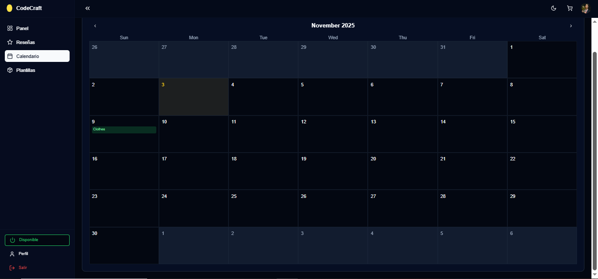
1. Fecha de Inicio (Acuerdo con el Cliente) ¿Qué Representa?: Es el día en que se formalizó el Acuerdo con el Cliente (firma del contrato y/o recepción del anticipo).
Significado: Marca el inicio oficial de la Elaboración del Proyecto y, por lo tanto, el punto desde el cual comienza a correr el tiempo establecido en el cronograma.
Visualización en el Calendario: El bloque del proyecto comienza en esta fecha.
2. Plazo Máximo de Entrega (Fecha Límite) ¿Qué Representa?: Es la fecha final establecida en la Propuesta de Valor para la Entrega Completa del Proyecto al cliente, lista para su Verificación y el subsiguiente Pago Final.
Significado: Es el deadline o fecha límite que el desarrollador está obligado a cumplir. Cumplir con este plazo es una condición fundamental para el éxito y la satisfacción del cliente (y la base de las Reseñas).
Visualización en el Calendario: El bloque del proyecto finaliza en esta fecha, sirviendo como una alerta visual constante para la gestión del tiempo.
Plantillas
Este panel permite al desarrollador crear y gestionar plantillas estandarizadas que sirven como esqueletos de trabajo, y documentos internos, ahorrando tiempo y asegurando la consistencia en el servicio al cliente.
{kind=link}
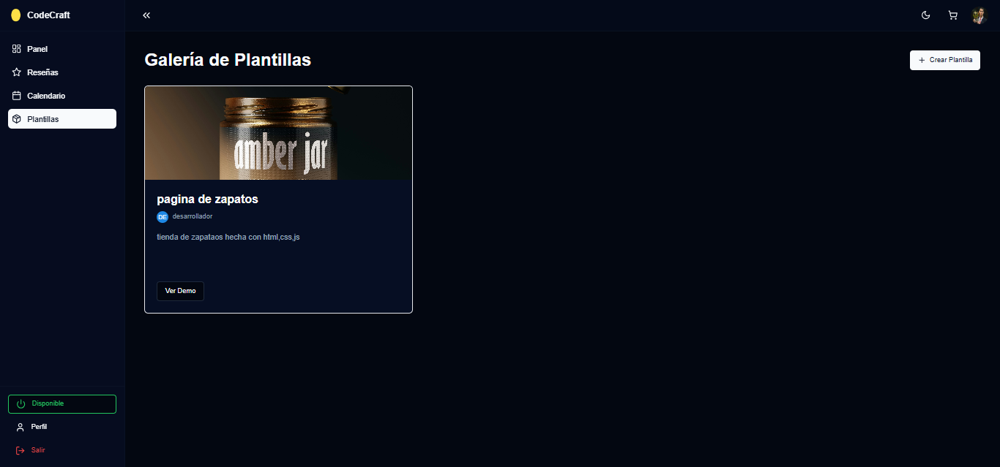
Crear plantilla nueva
{kind=link}
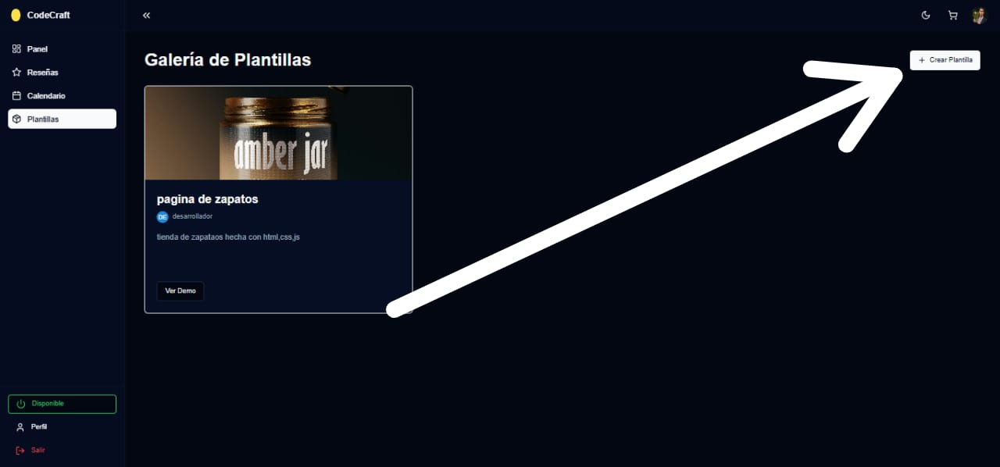
La creación de una nueva plantilla se basa en los siguientes datos:
La creación de una nueva plantilla se basa en los siguientes datos:
1. Título de la Plantilla
Propósito: Nombre identificativo y claro de la plantilla.
Ejemplo: «Propuesta Estándar - App Móvil», «Contrato Base de Desarrollo Web», «Checklist de Entrega Final».
2. Descripción Detallada
Propósito: Explicar el objetivo de la plantilla, su contenido principal, y el contexto en el que debe ser utilizada. Esta es la guía para el desarrollador que la vaya a utilizar.
Contenido Sugerido: Indicar qué secciones incluye (ej. Alcance, Cronograma, Presupuesto) y qué partes deben ser personalizadas para cada proyecto específico.
3. URL de la Imagen / Seleccionar Archivo
Propósito: Proporcionar una referencia visual rápida de la plantilla.
Uso: Subir una imagen (como un mockup o una captura de pantalla) que muestre el diseño o la estructura general del documento final que se generará. Esto es especialmente útil para plantillas de diseño o UI/UX.
4. Enlace a la Demo (Opcional)
Propósito: Ofrecer una vista previa funcional o interactiva del contenido que generará la plantilla.
Uso: Si la plantilla es para un componente de software o un demo de diseño (por ejemplo, una plantilla de panel de administración), se puede enlazar a una versión en vivo para que el desarrollador la revise antes de usarla.
Flujo de Uso de las Plantillas
Creación: El desarrollador llena los campos para guardar una estructura reutilizable.
Uso en Proyectos: Al recibir una Solicitud de Proyecto (formulario), el desarrollador selecciona la plantilla más adecuada (ej. «Propuesta Estándar»), la cual se rellena automáticamente con la información del cliente, acelerando el proceso de elaboración de la Propuesta de Valor.
{kind=link}
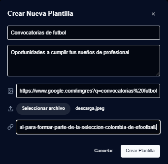
Disponible
El botón de estado «Disponible» (o su contraparte «No Disponible») es un mecanismo crucial que permite al desarrollador gestionar su capacidad de trabajo y al sistema regular la recepción de nuevas Propuestas de Valor.
{kind=link}
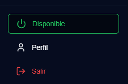
{kind=link}
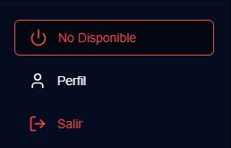
Estado: Disponible Significado: El desarrollador tiene capacidad de trabajo libre y está listo para asumir nuevas responsabilidades.
Implicación en el Flujo de Trabajo:
Puede recibir y analizar nuevas Solicitudes de Proyecto enviadas por los clientes (a través del formulario).
Tiene el tiempo para elaborar y enviar la Propuesta de Valor para proyectos nuevos.
Está preparado para iniciar la Elaboración de un nuevo proyecto en un plazo breve una vez que se cierre el acuerdo.
Estado: No Disponible (Implicado por la Oposición) Significado: El desarrollador está activamente involucrado en la elaboración de uno o varios proyectos (que están en el estado Activos en su Panel). Su capacidad está al máximo para cumplir con los Plazos Máximos de Entrega acordados.
Implicación en el Flujo de Trabajo:
Prioridad Absoluta: Cumplir con los hitos y plazos de los proyectos que ya se están elaborando.
Restricción de Nuevos Trabajos: El sistema debe limitar o detener la asignación de nuevas Solicitudes o la expectativa de que el desarrollador elabore nuevas Propuestas de Valor. Esto evita el sobreesfuerzo y garantiza la calidad en la entrega de los proyectos en curso.
Panel Administrador¶
Tras iniciar sesión, el Administrador accede al dashboard, donde puede visualizar su total de usuarios, proyectos activos, completados, ingresos totales, distribucion de usuarios, estado de proyectos, usuario, proyectos, calendario, plantillas, un icono de luna o sol de tema visual, perfil y salir.
{kind=link}
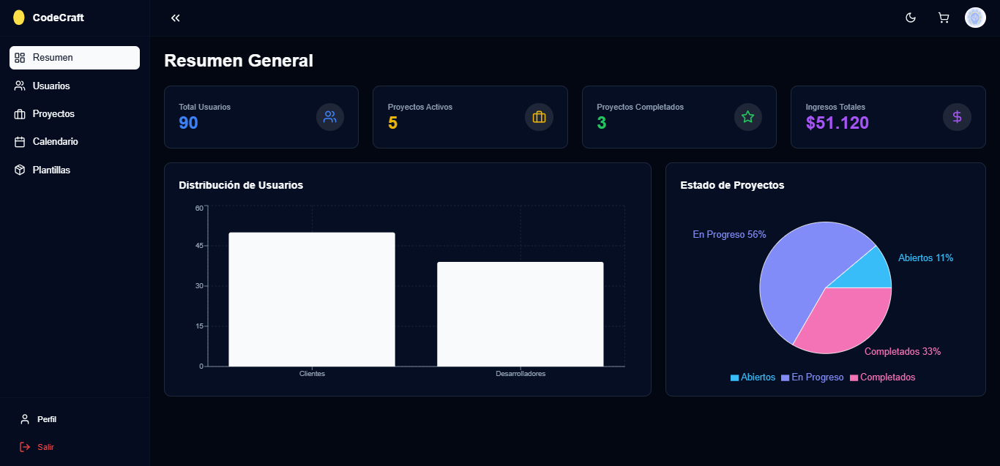
1. Indicadores de Cabecera (Métricas Clave) Estos son los números más importantes que miden el rendimiento general de la plataforma:
Total Usuarios (90): Muestra la base total de personas registradas en la plataforma, tanto Clientes (quienes envían solicitudes) como Desarrolladores (quienes elaboran los proyectos).
Proyectos Activos (5): Indica cuántos proyectos están actualmente en fase de Elaboración (los que están activos en el calendario de los desarrolladores). Esto refleja la carga de trabajo actual.
Proyectos Completados (3): Muestra la cantidad total de proyectos que han finalizado su elaboración, han sido entregados y cerrados (servicios facturados y pagados). Es un indicador de éxito y productividad.
Ingresos Totales ($51.120): La suma total de dinero generada por los proyectos completados a través de la plataforma. Es la métrica financiera clave para la administración.
2. Distribución de Usuarios Este gráfico de barras desglosa el Total de Usuarios (90) por rol:
Clientes: Son los usuarios que inician el proceso enviando la Solicitud de Proyecto (el formulario).
Desarrolladores: Son los usuarios responsables de analizar las solicitudes, elaborar la Propuesta de Valor y, posteriormente, la Elaboración del Proyecto si se llega a un acuerdo.
Propósito: Ayuda al administrador a balancear la oferta (desarrolladores) y la demanda (clientes).
3. Estado de Proyectos Este gráfico circular muestra el estado de todos los proyectos en curso (no solo los activos, sino también los que están en la fase inicial de negociación) y su distribución porcentual:
En Progreso (56%): Proyectos en fase de Elaboración activa (coincide con los «Proyectos Activos» de la cabecera, pero en porcentaje).
Completados (33%): Proyectos finalizados, entregados y pagados.
Abiertos (11%): Proyectos que han sido solicitados (por un cliente) y están pendientes de la respuesta del desarrollador (la Propuesta de Valor). Estos están en la fase de análisis y negociación inicial.
Conexión con el Flujo El panel de administración se conecta con todo el flujo que hemos estado definiendo:
La columna «Abiertos» refleja los proyectos recién ingresados por el formulario.
La columna «En Progreso» refleja la elaboración activa de proyectos por parte de los desarrolladores que están en estado No Disponible.
Las «Plantillas» y el «Calendario» son herramientas clave para gestionar eficientemente los proyectos En Progreso y pasar más rápido de «Abiertos» a «En Progreso».
Gestion de Usuarios
El panel de Gestión de Usuarios proporciona al administrador una vista completa de todas las personas registradas en CodeCraft, permitiendo la supervisión y el control sobre los dos roles principales: Clientes y Desarrolladores.
{kind=link}
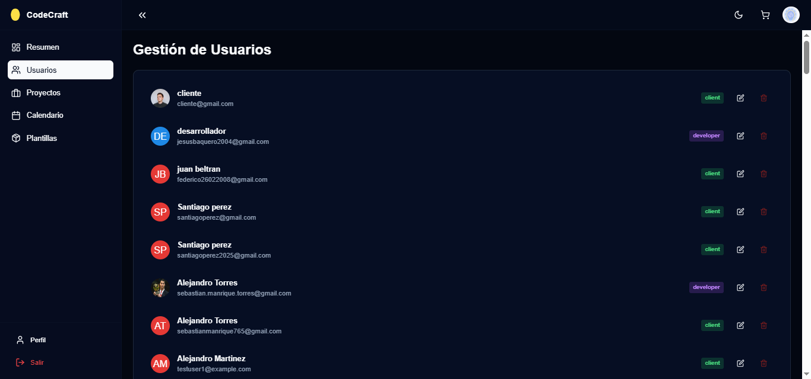
1. Información Mostrada por Usuario Cada entrada en la lista presenta la información clave para identificar y gestionar a la persona:
Avatar / Iniciales: Una representación visual del usuario.
Nombre de Usuario y Correo Electrónico: Los datos de contacto y la identificación única de la cuenta.
2. Roles Clave y su Significado La característica más importante del panel es la clara distinción entre roles, lo cual impacta directamente en el flujo de trabajo de proyectos
3. Acciones del Administrador El panel otorga al administrador la capacidad de realizar acciones de mantenimiento y control sobre cada cuenta:
Editar (Lápiz): Permite al administrador modificar la información del usuario, como el nombre, el correo electrónico o, lo más importante, cambiar el rol (por ejemplo, ascender un cliente con habilidades técnicas al rol de desarrollador, o viceversa).
Eliminar (Cubo de Basura): Otorga la capacidad de eliminar la cuenta de la plataforma, lo cual se usaría por motivos de seguridad, inactividad o incumplimiento de las políticas.
Vista Global de Proyectos
La «Vista Global de Proyectos» es el panel central donde el administrador supervisa el estado de todos los proyectos que han sido solicitados en la plataforma, desde su ingreso hasta la finalización de la elaboración y el pago.
{kind=link}
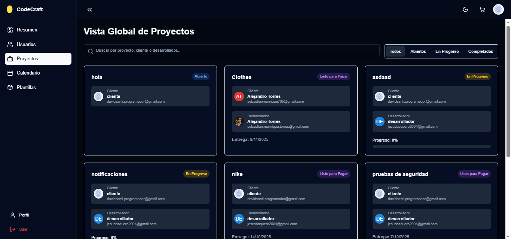
1. Funcionalidad Clave
Buscador: Permite al administrador localizar rápidamente un proyecto por título, nombre de cliente o nombre de desarrollador.
Filtros de Estado: Las pestañas superiores (Todos, Abiertos, En Progreso, Completados) permiten filtrar la visualización para enfocarse en una fase específica del ciclo de vida del proyecto.
2. Estados de Proyecto y su Significado El panel visualiza el flujo de trabajo completo del proyecto (la transición de la Solicitud a la Entrega y Pago).
3. Información Mostrada en cada Tarjeta Cada tarjeta de proyecto ofrece un resumen crucial para el administrador:
Título del Proyecto: (Ej. «Clothes»).
Cliente: Nombre y correo electrónico del usuario que generó la Solicitud de Proyecto.
Desarrollador: Nombre y correo electrónico del profesional asignado que está a cargo de la Elaboración del proyecto.
Entrega: Fecha Límite acordada para la entrega del proyecto (directamente ligado al campo «Fecha Límite Deseada» del formulario y al Calendario).
Progreso: El porcentaje que indica el avance de la Elaboración del proyecto. Este dato es clave para que el administrador pueda intervenir si hay retrasos.
Este panel permite al administrador tener una vista de helicóptero sobre toda la operación, garantizando que todos los proyectos se muevan eficientemente a través de las fases de Solicitud, Propuesta, Elaboración y Pago.
Calendario de Proyectos
El Calendario de Proyectos proporciona al administrador una vista de alto nivel de todos los compromisos de la plataforma. Su función principal es la gestión de riesgos y la planificación de la capacidad de los desarrolladores.
{kind=link}
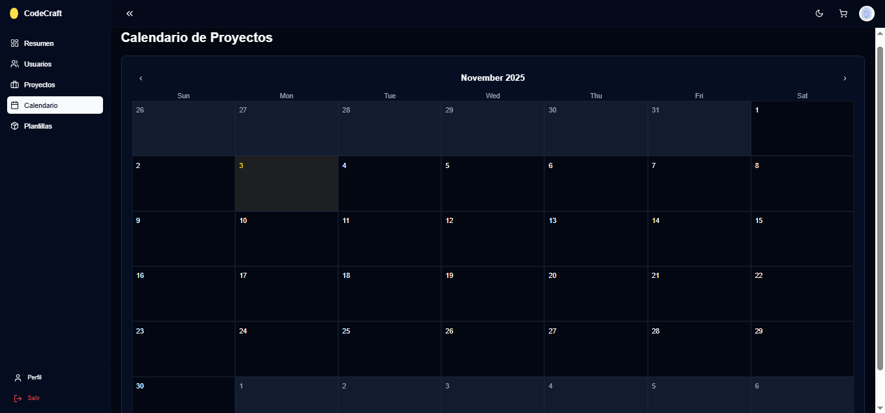
1. El Origen de los Eventos en el Calendario Los eventos marcados en el calendario provienen directamente de los datos críticos proporcionados por el cliente en la Solicitud de Proyecto y formalizados en la Propuesta de Valor y el Acuerdo.
La fecha más importante que visualiza el administrador es:
Fecha Límite Deseada: Esta fecha, ingresada por el cliente en la sección «5. Alcance y Tiempos» del formulario de Solicitud, se convierte en el Plazo Máximo de Entrega para el desarrollador una vez que el proyecto pasa a estado Activo.
Hitos Intermedios (Opcional): El desarrollador también puede marcar fechas clave para la entrega de avances importantes durante la Elaboración del proyecto.
2. Propósito y Uso para el Administrador El administrador utiliza este calendario para tres funciones críticas:
Función Administrativa |
Conexión con el Flujo de Proyectos |
|---|---|
Monitoreo de Riesgos |
Permite ver de un vistazo si la fecha actual (por ejemplo, lunes, 3 de noviembre) está muy cerca de la fecha límite de un proyecto grande. Si un proyecto activo está marcado en color de riesgo (amarillo o rojo) al acercarse su Fecha Límite Deseada, el administrador sabe que debe intervenir. |
Supervisión de Capacidad |
Al observar el número de proyectos asignados a cada desarrollador en un mismo mes, el administrador puede confirmar si un desarrollador marcado como No Disponible realmente tiene una carga de trabajo completa, justificando su incapacidad para asumir más proyectos. |
Planificación de Asignaciones |
Facilita la planificación de la asignación de proyectos Abiertos (pendientes de propuesta) a desarrolladores que finalizarán sus proyectos en el mes siguiente, asegurando que la plataforma mantenga una capacidad productiva constante. |
3. Visualización de Proyectos Activos
Cada compromiso que está en la fase «En Progreso» o «Listo para Pagar» en la Vista Global de Proyectos tiene su fecha de entrega reflejada en este calendario, permitiendo al administrador gestionar el cumplimiento del cronograma con precisión.
Plantillas
El panel de Galería de Plantillas permite al administrador tener una vista centralizada de todas las plantillas que los desarrolladores han creado para uso interno o para generar la Propuesta de Valor para los clientes.
{kind=link}
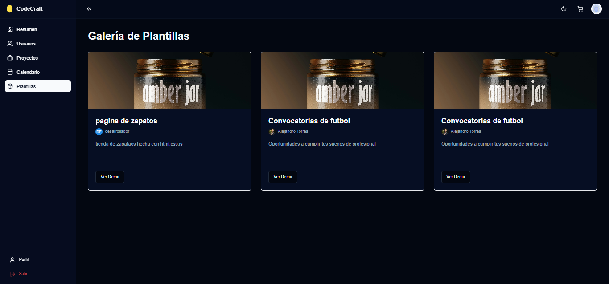
1. Propósito Administrativo
Asegurar la Calidad: El administrador puede revisar cada plantilla para verificar que cumpla con los estándares de la plataforma antes de que otros desarrolladores las utilicen.
Estandarización: Promueve el uso de formatos y estructuras consistentes para la documentación y la Propuesta de Valor, lo cual agiliza el proceso de elaboración.
Control de Contenido: Permite al administrador aprobar o rechazar plantillas, asegurando que solo se compartan recursos relevantes y profesionales.
2. Información Visualizada por Plantilla
Cada tarjeta de plantilla muestra un resumen de la información que se ingresó en el formulario de «Crear Nueva Plantilla»:
Elemento Visual |
Origen de Datos (Formulario de Creación) |
Importancia en el Flujo |
|---|---|---|
Imagen de Muestra |
URL de la imagen / Archivo subido |
Permite al administrador ver rápidamente el aspecto visual o el diseño de la plantilla. |
Título de la Plantilla |
Título de la plantilla |
Describe el propósito (ej. “página de zapatos”). |
Creador (Desarrollador) |
Perfil del Desarrollador |
Indica quién creó la plantilla, crucial para la supervisión y para resolver dudas sobre su uso. |
Descripción Breve |
Descripción detallada |
Un resumen rápido del contenido o la utilidad de la plantilla. |
Botón “Ver Demo” |
Enlace a la demo (opcional) |
Permite al administrador previsualizar el recurso o código funcional que genera la plantilla antes de su aprobación o uso general. |
3. Conexión con el Proceso de Elaboración Los desarrolladores usan estas plantillas para:
Acelerar la Propuesta de Valor: Utilizar una plantilla de propuesta estándar para transformar rápidamente la Solicitud de Proyecto de un cliente en un documento formal de cotización.
Facilitar la Elaboración: Usar plantillas de código, estructuras de base de datos o checklists de desarrollo (como la «página de zapatos» en el ejemplo) para empezar a trabajar de manera eficiente una vez que el proyecto está Activo.